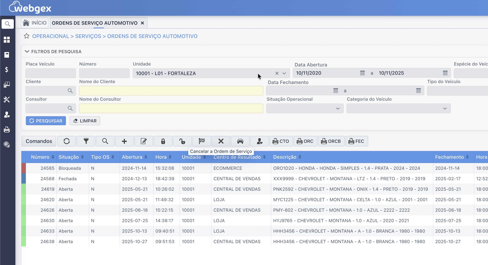

Isso parece familiar?
Se você se identifica com algum destes desafios, saiba que não está sozinho. São os problemas mais comuns que travam o crescimento de centros automotivos.
Orçamento Lento
Perder vendas porque demora para cotar uma peça que não tem em estoque.
Estoque Fantasma
Dinheiro parado em peças que não giram ou "somem" sem registro.
Caos nas Ordens de Serviço
Controle em papéis que se perdem, gerando retrabalho e atrasos.
Lucro que Evapora
A oficina vive cheia, mas no fim do mês você não sabe para onde foi o dinheiro.
Comissão que Dá Dor de Cabeça
Gastar horas em planilhas para calcular pagamentos, arriscando erros e desmotivando a equipe.
Processo de Compra Lento
O atendente para tudo para ligar para fornecedores enquanto o cliente espera, atrasando toda a operação.
Chega de "apagar incêndios".
É hora de ter um Painel de Controle.
O ERP WEBGEX foi desenhado para a realidade do setor automotivo. Ele centraliza toda a sua operação, transformando o caos em um fluxo de trabalho inteligente e lucrativo.
- Agilidade no Balcão: Crie Ordens de Serviço digitais, consulte histórico pela placa e acione seu comprador com a Cotação Emergencial em segundos.
- Controle Financeiro Real: Saiba o lucro de cada O.S., integre a emissão de notas (NFS-e e NF-e) e tenha um DRE atualizado em tempo real.
- Equipe Motivada: Automatize qualquer regra de comissionamento (por mecânico, peça ou serviço) e acabe com as planilhas manuais.

"A UNIGEX, com seus sistemas, suporte, lógica de marca, segurança e adaptabilidade tecnológica, atendeu plenamente nossas necessidades, conferindo credibilidade. Como cliente, recomendo para empresas do setor automotivo."– Beto's Car
Sua gestão está "batendo pino". Nós temos a ferramenta certa.
Antes de pensar em software, você precisa de um diagnóstico. Nossa ferramenta gratuita de 20 perguntas vai te mostrar, em 5 minutos, os pontos exatos onde sua oficina está perdendo dinheiro e eficiência.
Descobrir Meus Gargalos Agora →Receba seu nível de maturidade e um plano de ação imediato.